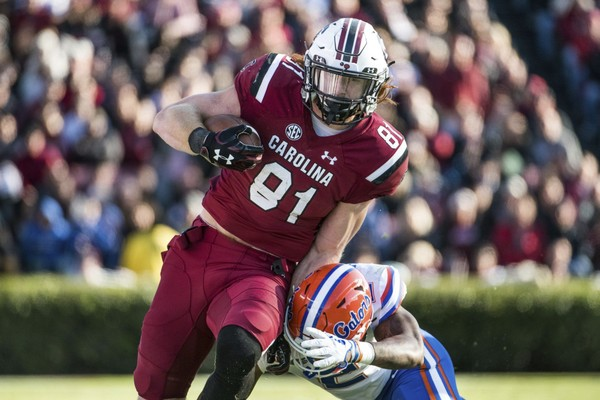
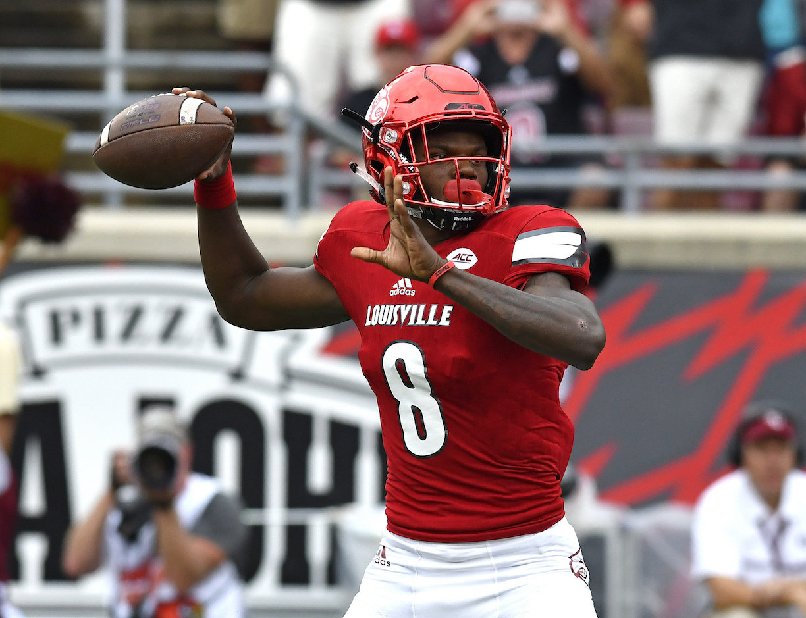
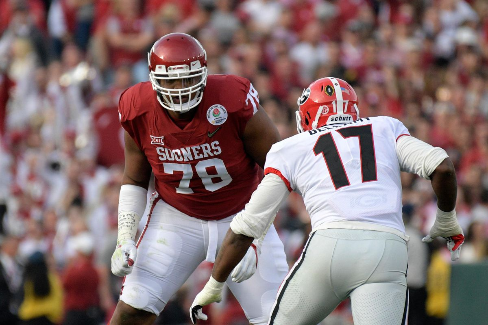
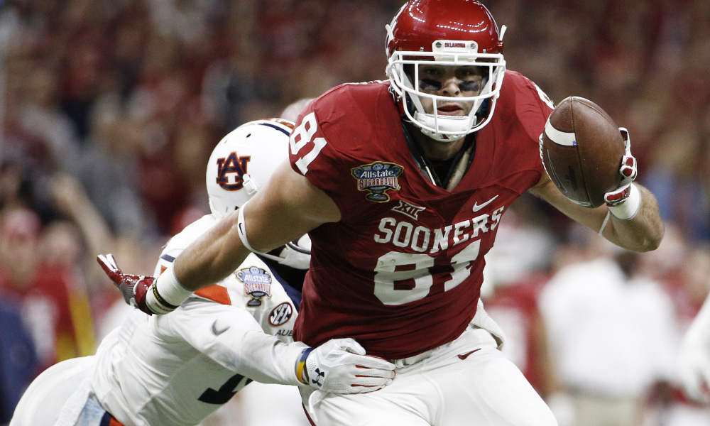
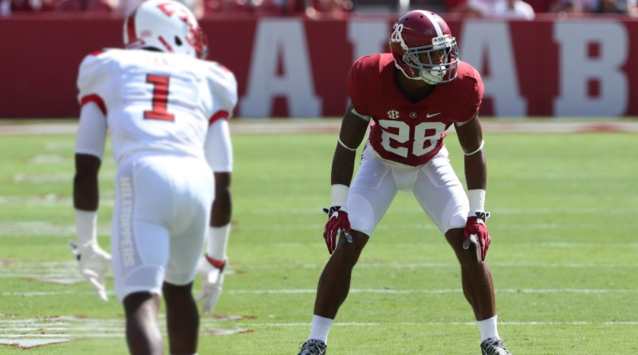

First Round, 25th Pick
Hayden Hurst, TE, South Carolina

First Round, 32nd Pick
Lamar Jackson, QB, Louisville

Third Round, 19nd Pick
Orlando Brown, OT, Oklahoma

Third Round, 22nd Pick
Mark Andrews, TE, Oklahoma

Fourth Round, 18nd Pick
Anthony Averett, CB, Alabama

The Baltimore Ravens enter the 2018 NFL draft after a disappointing 9-7
season in which they failed to make the playoffs.
Although John Harbaugh's team won five of their last seven games,
the Ravens' early season struggles doomed them in a tight AFC playoff race.
So far in the offseason, Baltimore signed quarterback Robert Griffin III,
released wide receiver Jeremy Maclin and signed wide receivers John Brown and Michael Crabtree.
To allow the Bills to move up and take Tremaine Edmunds in the first round of the draft,
the Ravens slid back six spots to No. 22 and snagged the first pick in the third round.
They gave the Bills a fifth-round pick in the deal as well.
They soon made a second trade, sending that No. 22 pick from Buffalo along with a sixth round pick to Tennessee
in exchange for the No. 25 pick and a fourth rounder.